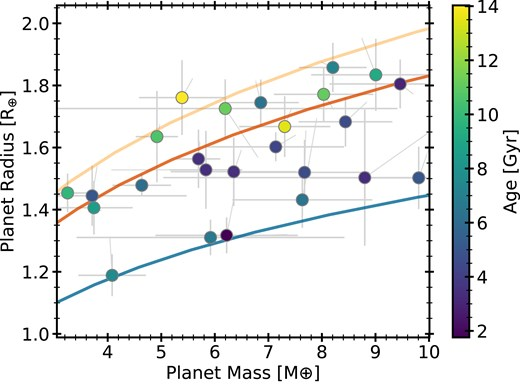
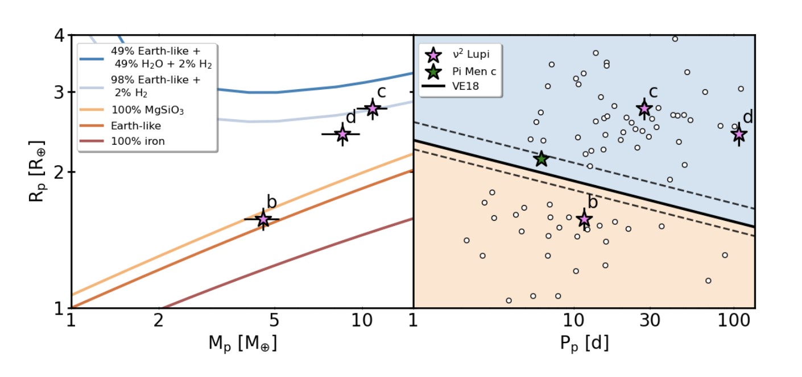
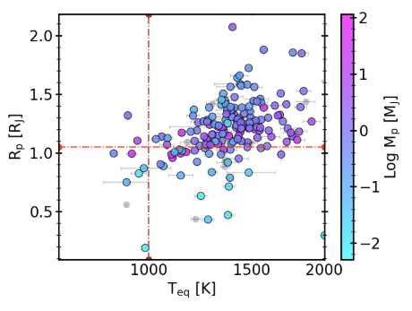

Research
My work focuses on Exoplanet science, stellar astrophysics, and asteroseismology.
I am primarily interested in using all of the above to understand the demographics of extrasolar systems in the Milky Way, via their host stars, and through the lens of Galactic Archeology.
Research Highlights

Younger Stars Host Denser Rocky Planets
We homogeneously characterised the host stars of small, rocky exoplanets and discovered a correlation between their ages and the planet densities.Read the paper →

Asteroseismology of a Naked-Eye, Super-Earth Host Star
We detected solar-like oscillations in the TESS 20-second cadence data for ν2 Lupi, a naked-eye exoplanet host star. Read the paper →
Hot Juiters Inflate on the Main Sequence
. We find a clear link between Main-Sequence age and Hot Jupiter Radii, and a stronger connection between planet properties and stellar metallicities. Read the paper →1. A Link between Stellar Age and Rocky Planet Composition
Masses and Radii of small, rocky exoplanets from Weeks et al. 2025 (a). Older stars host less dense rocky planets.
We homogeneously characterised the host stars of small, rocky exoplanets and discovered a correlation between their ages and the planet densities.
Read the paper
HERE.
2. Asteroseismology of Nu Lupi: a naked-eye testbed for radius valley formation
We detected solar-like oscillations in the TESS 20-second cadence data for ν2 Lupi, a naked-eye exoplanet host star. We found an ancient asteroseismic age, and analysed its kinematics to affirm its thick disk membership. It hosts two sub-Neptunes, located above the radius valley, and one super-Earth, located below the radius valley. This star was not included in our 2024 sample, as it was too bright to be analysed by Gaia's Radial Velocity Spectrometer, but we find that its rocky planet fits into the age-composition relation we found for this population of planets.
You can read about our in-depth analysis of the system ν2 Lupi system HERE.
Power spectrum showing oscillations of ν2 Lupi in the TESS 20-second cadence data. Plot from Weeks et al. 2025 (b)
Re-calculated planet parameters of the ν2 Lupi system planets in the context of the Asteroseismic radius valley
(Van Eylen et al. 2018). Plot from Weeks et al. 2025 (b) .
3. Hot Jupiter Inflation through the Lens of Gaia
Since the first discovery of extra-solar planets, astronomers have been puzzled over the larger-than-predicted radii of 'hot Jupiter' planets. After a certain point, hydrostatic equilibrium states that adding more matter to a giant planet in formation should only increase its density, and not its size (radius). However, radii of these planets commonly exceed such a limit. Much work has been done to try and disentangle the causation of this radius inflation.
Our work applies a similar methodology to Weeks et al. 2025 (a), in order to homogeneously investigate the influence of stellar properties on hot Jupiter characteristics. We also employ data-driven techniques to model-independently separate inflated from non-inflated planets.
Newly calculated hot Jupiter parameters from Weeks 2025b (in Prep). Planets with Teq > 1000 K are expected to be inflated, according to models. We observe a gradient with planet mass in this population, as seen in the literature.
More results and figures can be found in my GitHub repositories.